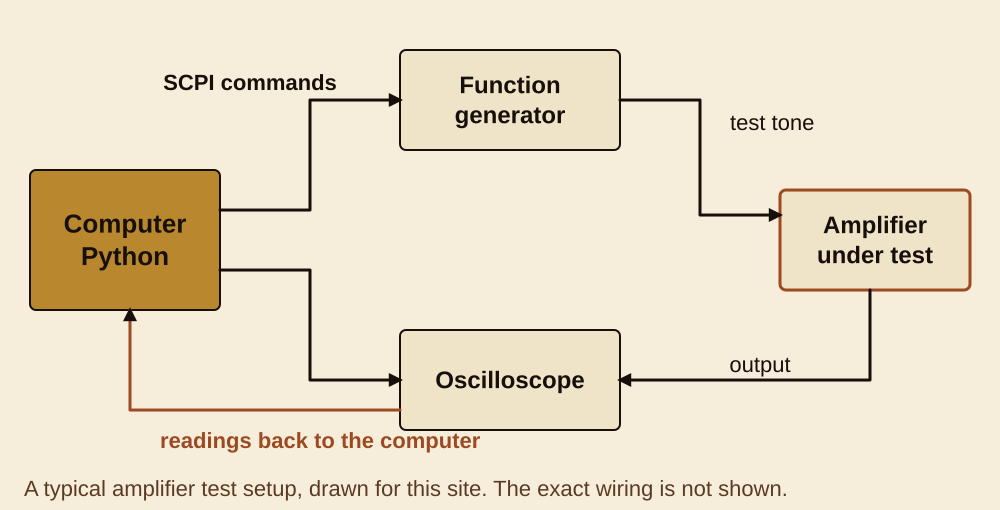
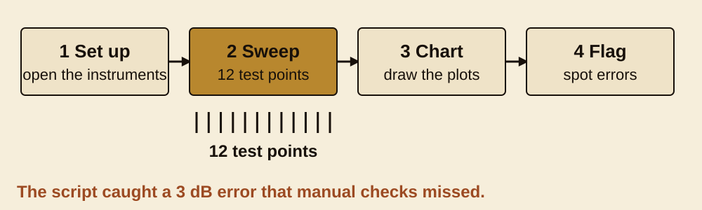
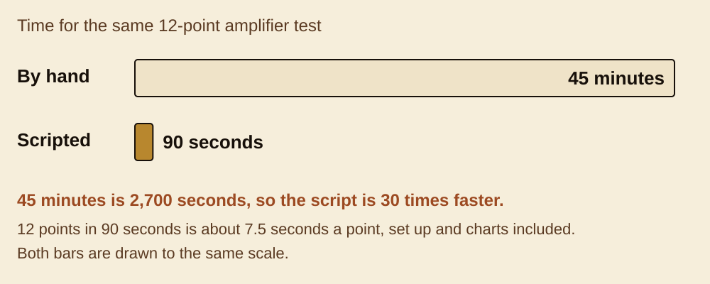

Hardware and Python
Automated bench test rig
Lab instruments driven by Python, so an amplifier test runs in 90 seconds.
- No public link.

In numbers
- 45 min to 90 sfor a 12-point amplifier test
- 30xfaster than by hand
- 3 dBerror caught that manual checks missed
- 12test points per run
The problem
Testing an amplifier by hand means setting a signal on the function generator, reading the result on the oscilloscope, writing it down, and repeating for every test point. A 12-point test took 45 minutes. It is slow, and it is easy to misread a number or skip a step.
Slow tests get run less often, and tired eyes miss things.
The approach
Most bench instruments accept text commands over a standard called SCPI. I wrote Python that sends those commands, so the computer sets up the function generator, steps through the 12 points, reads the oscilloscope each time, and draws charts when the run ends.
The result is one command instead of 45 minutes of knob turning, and every run is done the same way.
How it works
SCPI commands are short lines of text. A few well-known ones are shown below, as an illustration of the style. Each instrument adds its own commands for its own settings.
# Standard SCPI, the same on most instruments *IDN? ask the instrument who it is *RST put it back to a known state *OPC? answer when the last command is done
The setup is the diagram at the top of the page. Python sits at the left and talks to both instruments.
A run has four steps. The script sets up the instruments, sweeps the 12 test points, draws the charts, and flags anything that looks wrong.

The charts are drawn at the end of each run, so the whole result is visible at once instead of as a column of numbers.
Results

| Measure | By hand | Scripted |
|---|---|---|
| 12-point amplifier test | 45 minutes | 90 seconds |
| Time per point | about 3.75 minutes | about 7.5 seconds |
| Charts | by hand | drawn at the end of each run |
The script also caught a 3 dB error that manual checks missed. Per-point times are the totals divided by 12, so they include setup and charts.
What I did
- Scripted the lab instruments in Python over SCPI.
- A 12-point amplifier test went from 45 minutes to 90 seconds.
- Charts draw themselves at the end of each run.
- It caught a 3 dB error that manual checks missed.
What I learned
Automation is also a quality tool. The test was faster, and every run was also the same, which is how a 3 dB error showed up that people checking by hand had missed.
Standards pay off. Because SCPI is common, the same approach works across instruments from different makers, with only the instrument-specific commands changing.
Show the result as a picture. A chart at the end of a run is easier to trust than twelve numbers on a screen.